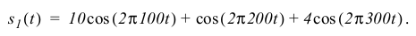
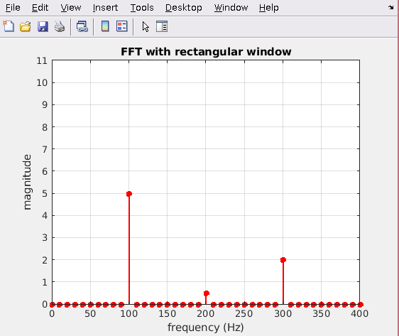
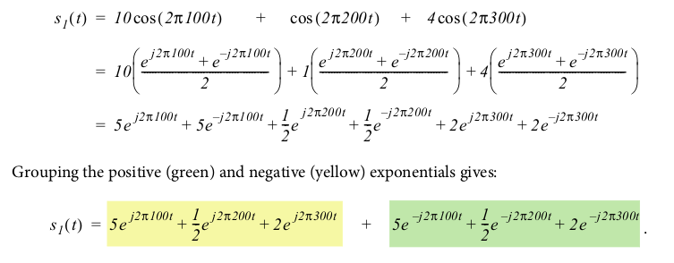
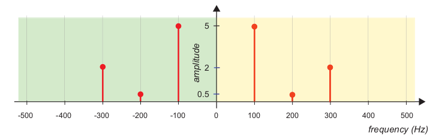
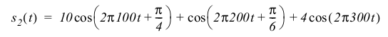
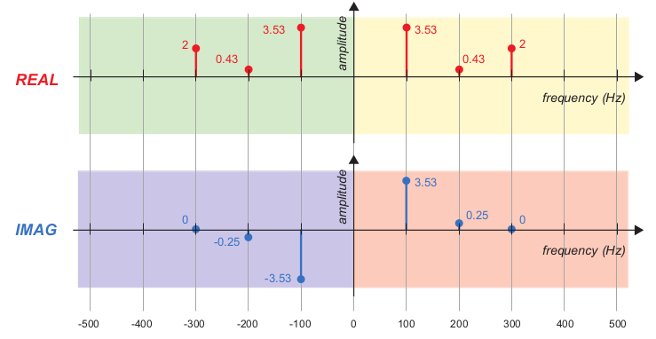
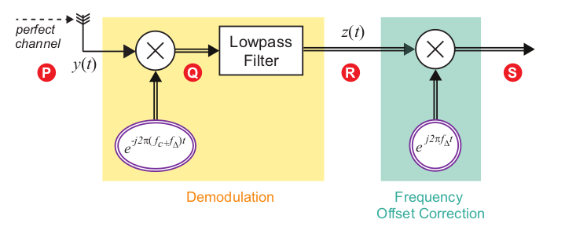

ejwt = cos(wt) + j*sin(wt)
cos(wt) = (ejwt + e-jwt)/2
sin(wt) = (ejwt - e-jwt)/2
cos(a)cos(b) = 0.5*cos(a+b) + 0.5*cos(a-b)
signal composed of three sine waves, with frequencies 100Hz, 200Hz and 300Hz, and respective amplitudes, 10, 1, and 4
When performing FFT, if number of bins and sample frequency don't line up to exactly match a frequency component (e.g. if bins at a step of 10 Hz but your frequency is say 12 Hz), the result is data getting split up into the closest/nearby bins. e.g. (first no leakage, second leakage):
Using cos(wt) = (ejwt + e-jwt)/2:
The resulting plot looks like:
Offsets are pi/4, pi/6, and none
This resulting graph is the "magnitude spectra" - gives the magnitude component at each complex exponential value
Two independant or separate 'phases' of data are transmitted (modulating two independant baseband information signals onto sine and cosine carriers at the same frequency)
The desired baseband signal, g(t), is "modulated" (in this case multiplied by) a high frequency carrier signal, c(t). So the resulting modulated signal s(t) = c(t)*g(t)
Demodulation is done by multipliying the received signal again with the carrier signal c(t): x(t) = c(t)*s(t) = c(t)*(c(t)*g(t)) then sending the output through a low pass filter
This doesnt include phase locking and carrier synchronization, which is required if the receiever doesnt have the exact same frequency and phase (which is most often)
If the phases dont match (e.g. the receiver has a phase offset of θ, the resulting demodulated signal will have an extra cos(θ) in its amplitude (e.g. the demodulated signal is (A/2)g(t)cos(θ) instead of (A/2)g(t)
Uses complex representation. Requires less bandwidth than amplitude modulation (which requires 2f Hz to transmit a f Hz signal). In this case we send to signals at frequency f at different phases, e.g. 90 degrees apart. One is a sine wave and the other is a cosine wave
The cosine channel is In-Phase (I) ('real'), the sine channel is Quadrature Phase (Q) ('imaginary'). The sine value is -sin(2*pi*f*t) = cos(2*pi*f*t + pi/2). Notice the cosine version is 90 degrees phase offset from the cos (in-phase) signal
To modulate, baseband signal g1(t) is multiplied by the in phase (cos/I) component, the baseband signal g2(t) is multiplied by the quadrature (-sin/Q) component, then their results are added together
The final result is y(t) = g1(t)*cos(2*pi*f*t) - g2(t)*sin(2*pi*f*t)
To demodulate, you extract the in phase g1(t) by multiplying the input signal by the cosine component (I), and extract the quadrature g2(t) by multiplying the input signal by the -sin (Q) component. Both outputs have to then go through a lowpass filter.
Again, non-matching rx phase and frequency must also be accounted for
use g(t) = g1(t) + j*g2(t)
The modulated signal v(t) = g(t)*ej*2*pi*f*t, which contains a real and imaginary component. The final transmitted signal y(t) is the real component only of v(t) (the imaginary component is dropped), which turns out to be the same as the above non-complex method (y(t) = g1(t)*cos(2*pi*f*t) - g2(t)*sin(2*pi*f*t)
Demodulation is done by multiplying the received by e-j*2*pi*f*t (same as for modulation except j is negative), then sending the output through a lowpass filter
for if the receiving signal has a slight offset: f + fΔ instead of just f
Then the receiver demodulated is x(t) = y(t)e-j*2*pi*(f+fΔ)*t
= [g1(t)cos(2*pi*f*t)-g2(t)sin(2*pi*f*t)]*e-j*2*pi*f*t*e-j*2*pi*fΔ*t
The last *e component is extra due to the frequency offset, meaning we have been shifted by that amount on the frequency spectrum
The solution then to correct is to shift the demodulated signal by the opposite: multiply by the same extra e component except use +j instead of -j. The process is shown below:
